OSVALDÃO
Acesso restrito
Longa-metragem de ficção
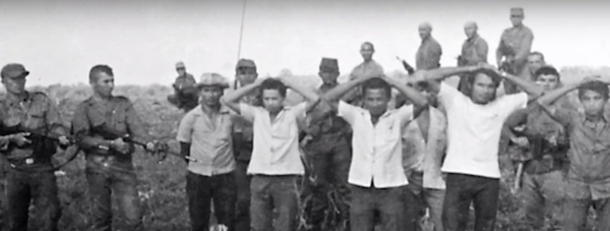
Storyline
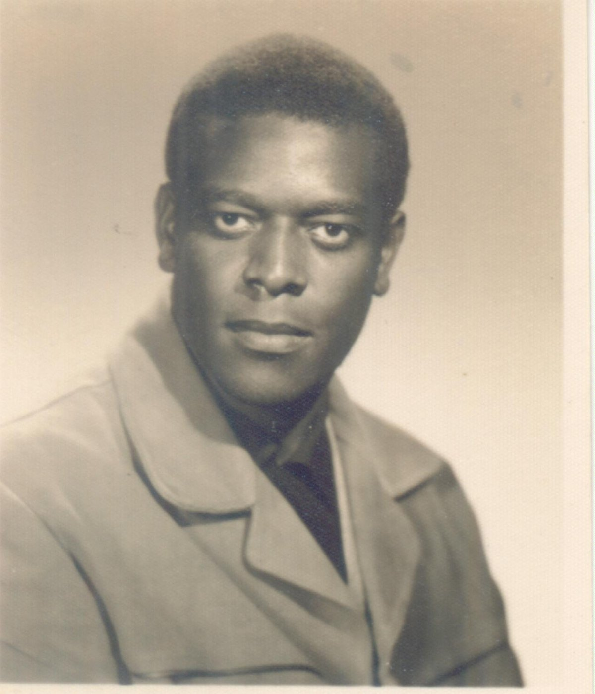
Osvaldo, um gigante de quase dois metros, boxeador, formado engenheiro em Praga, recrutado para aprender táticas de guerrilha na China e negro, embrenha-se na selva do Araguaia para preparar uma revolução e ali se torna amigo, padrinho, garimpeiro, lenda. Num terreiro de terecô seu corpo é fechado, e o feitiço tem uma lei, protege contra o ódio dos inimigos, nunca contra um amigo, o sangue de amigo derramado é porta aberta.
Quando o Exército invade a mata, milhares de soldados não conseguem matá-lo, e os relatórios militares registram não só um homem que vira pedra e é capaz de desaparecer na mata, mas também pegadas de Curupira e um lobisomem que ronda a serra. Cercado, faminto, vendo os companheiros caírem um a um, Osvaldão executa Osmar, um amigo, que o traiu, mas ele tinha um motivo, mas a mensagem que o inocentava nunca chegou. A porta está aberta.
Capturado e torturado, Arlindo, o irmão de terreiro que jurou protegê-lo, guia os militares até o último encontro, onde a profecia se cumpre. Arlindo, não tinha escolha, a alma atada e calada, executa com um tiro, vindo da boca do revólver de um amigo, Osvaldão tomba. Seu corpo é içado em um helicóptero e exibido pela região.
Sinopse
Araguaia, fim dos anos 1960. Osvaldo desce o rio como quem não pretende voltar, gigante negro de quase dois metros, boxeador formado engenheiro em Praga. A mata o recebe como recebe a chuva, sem perguntar de onde vem. Ele derruba castanha, bate garimpo, ensina o que sabe, ajuda no que pode, até em festa de criança ele ajuda e a comunidade, que mede um homem pelo que ele carrega para os outros e não pelo que dizem dele, o adota muito antes de qualquer causa.
É Arlindo, filho daquele chão, o primeiro a lhe estender a mão, quem o ensina a ler as grotas e as luas, e a amizade dos dois vira coisa de se invejar, um irmão de alma que a região inteira reconhece. Osvaldo vira Osvaldão, padrinho de dezenas de crianças, o primeiro a chegar e o último a sair das festas, porque gosta de dançar e as mulheres gostam de dançar com ele.
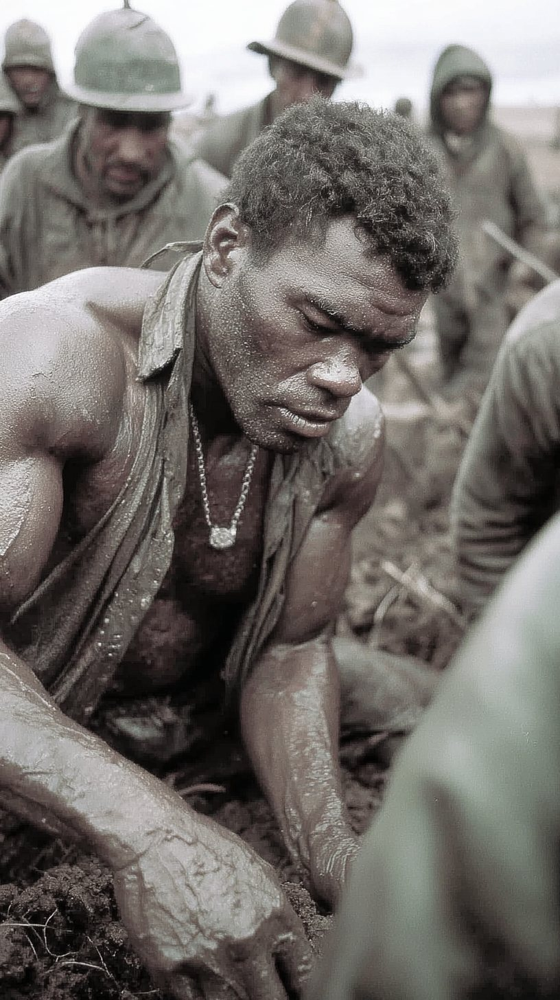
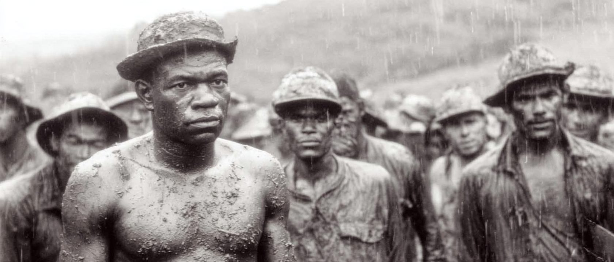
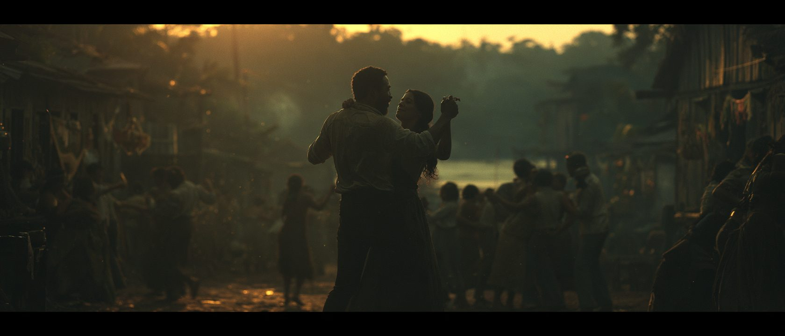
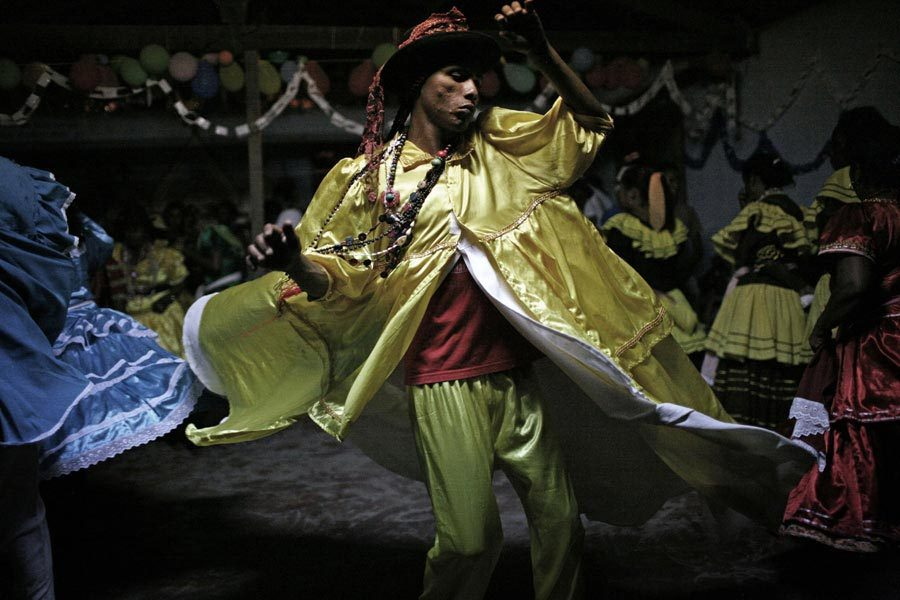
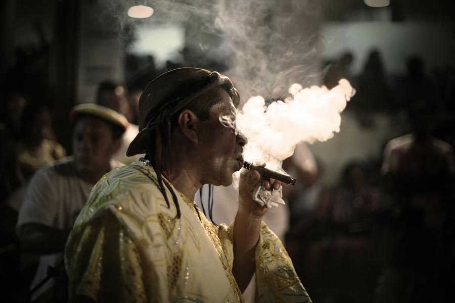
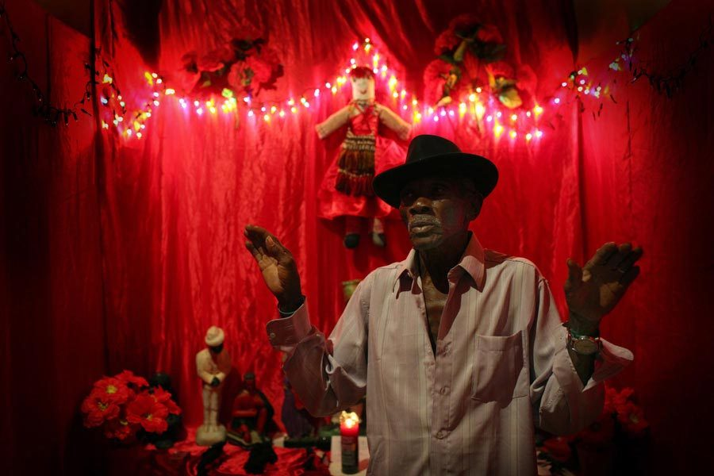
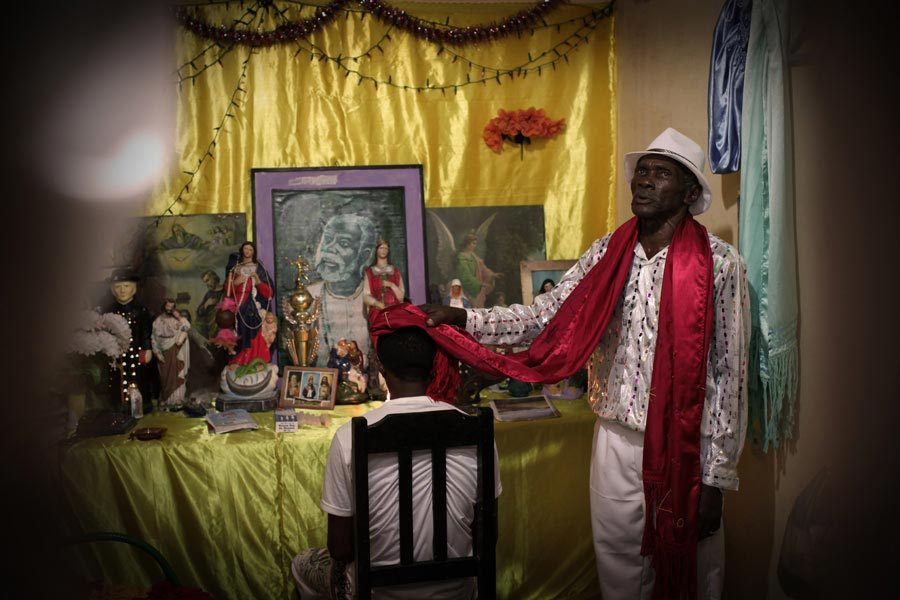
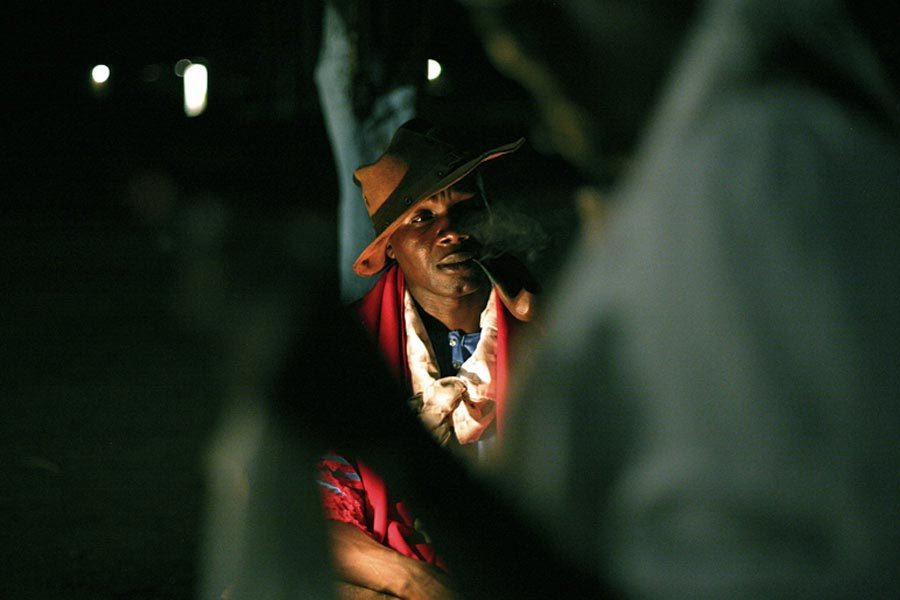
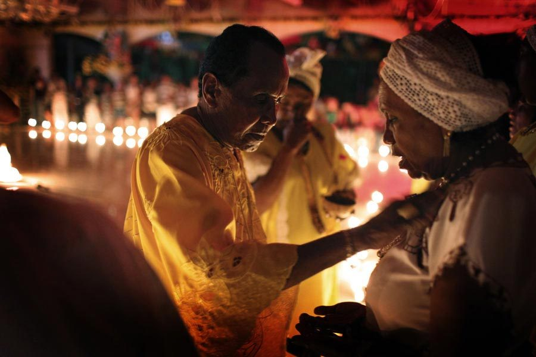
Uma noite, no terreiro de terecô, entre pontos cantados e fumaça, o velho terecozeiro fecha o corpo do gigante, e junto com a proteção entrega a lei, dita uma vez só, em voz baixa:
o feitiço protege contra o ódio dos inimigos, nunca contra o amor de um amigo, sangue de amigo derramado é porta aberta.
Osvaldão guarda a sentença como se guarda um segredo que não se entende por inteiro. Daquela noite em diante, há quem jure que a mata passa a tratá-lo como parente.
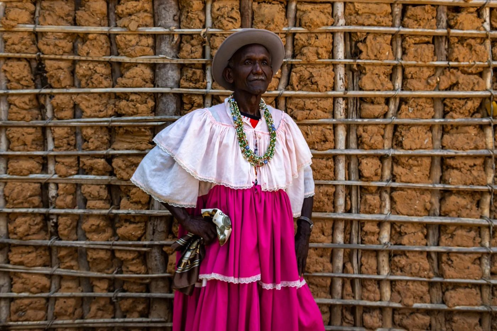
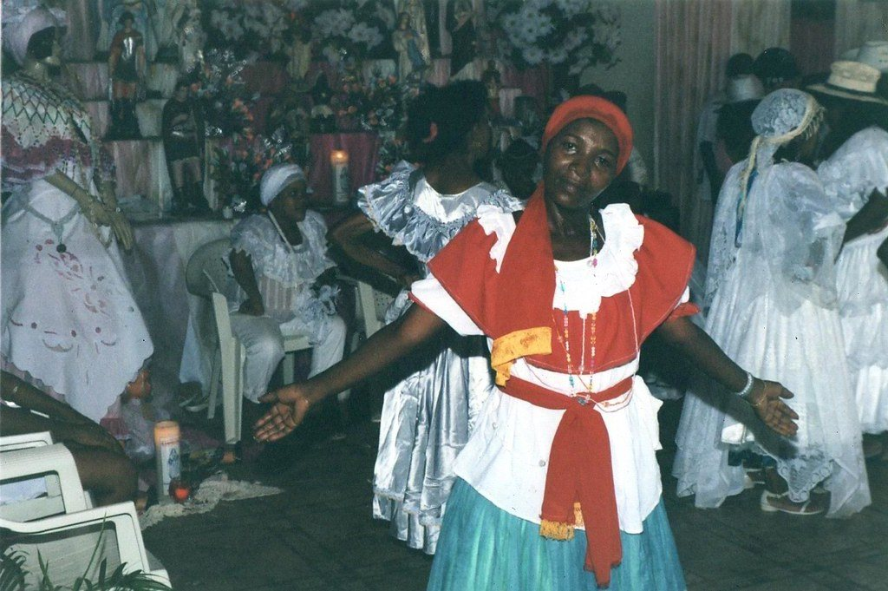
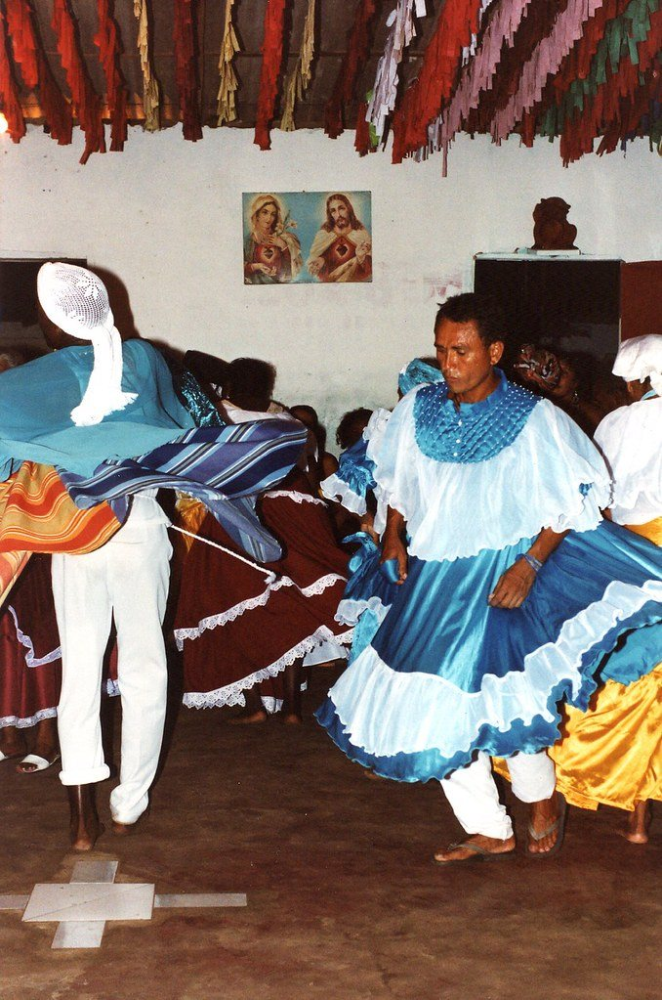
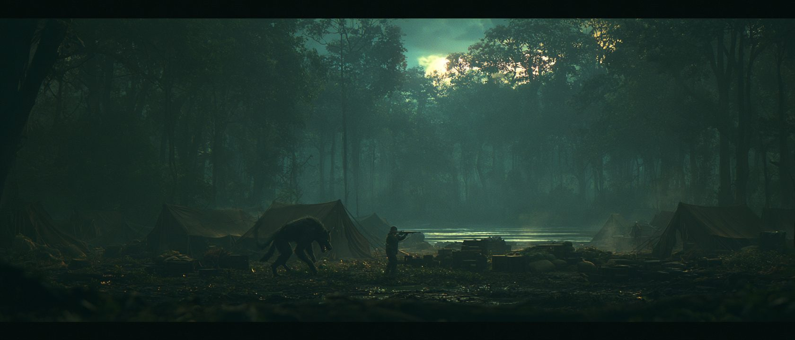
Quando a ditadura despeja sobre a região a maior operação militar de sua história, tudo está a perder, casas queimadas, roças cortadas, o conflito iminente. Com a guerra chegam os companheiros, e entre eles Dina, geóloga baiana, pontaria de acertar uma mosca, a única que fala com Osvaldão de igual para igual, sua consciência racional, a que lê o chão por baixo da mata e insiste em lembrar que todo feitiço tem uma lei.
Na primeira campanha, a floresta luta do lado deles, colunas inteiras se perdem, soldados choram antes de entrar na mata, e as balas, dizem, não atravessam Osvaldão. Os relatórios do próprio Exército registram, com carimbo oficial, seguiram pegadas que levavam para o caminho errado, um Curupira, um guerrilheiro que vira sombra, que é de pedra, uma mulher que flutua pelas trilhas e não deixa rastro mas que de longe mata soldados com tiro no olho, e na serra, nas noites de lua, um lobisomem ronda os acampamentos.
Vem a trégua, as festas voltam, tudo parece em seu lugar. E é justamente a vitória que os condena.
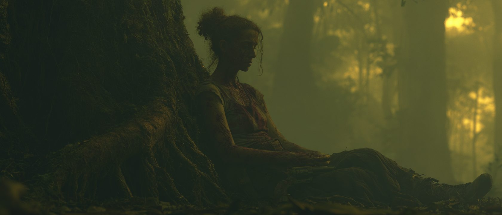
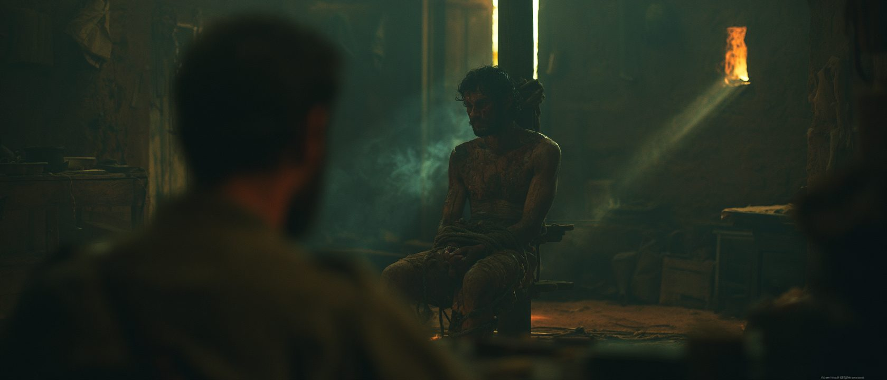
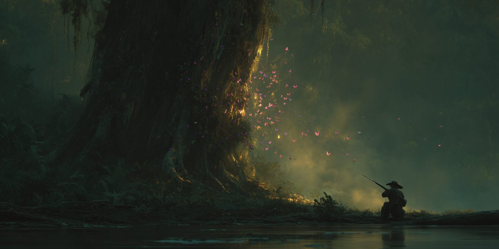
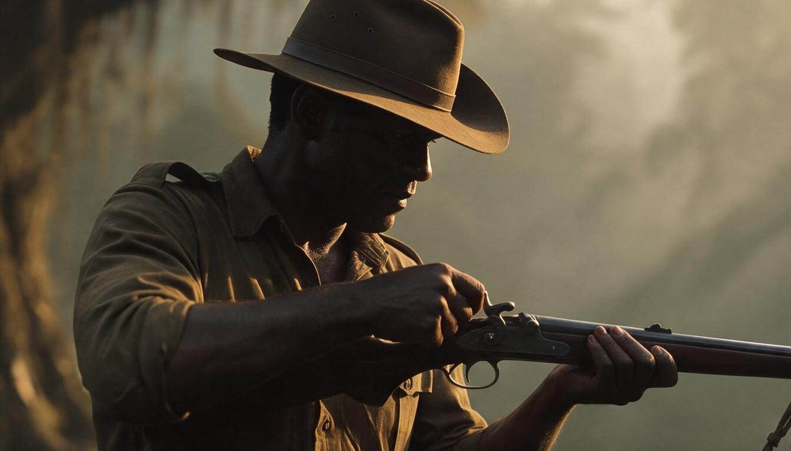
A resposta chega no ano seguinte, e chega diferente, soldados sem farda, uma ordem escrita mandando matar sem prisão. Dina cai de frente para os fuzis, porque exigiu morrer olhando, e depois do instante do tiro, uma panapanã revoa para o céu, centenas de asas coloridas subindo da mata, e ninguém saberia dizer se é luto ou aviso.
Osmar, amigo de casa e de festa, é sequestrado pelos militares e devolvido dias depois, calado, diferente, e a partir daí os esconderijos caem, as emboscadas acertam, sem que ninguém saiba dizer o que fizeram com ele lá dentro, nem se fizeram. Osvaldão o executa. Não há julgamento. É o erro do herói, a tragédia, os escritos dos Deuses, e nem ele sabe o tamanho. Arlindo desaparece numa batida do Exército, e dele, nenhuma notícia.
A porta está aberta.
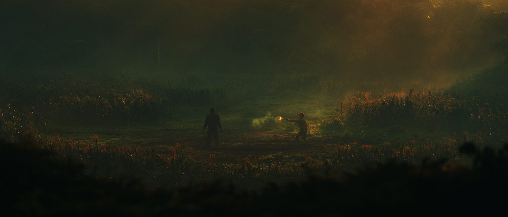
O cerco se fecha. Sem Dina, sem saber o paradeiro do irmão, com o peso de Osmar nos ombros, Osvaldão sente o que nunca tinha sentido, o corpo pesa, a mata silencia à sua passagem, um espinho lhe tira a primeira gota de sangue em anos. Ele sabe que o feitiço já não o cobre. O que não sabe, o que nem lhe ocorre saber, é de onde virá o tiro.
Nos porões, praticamente morto por dias de tortura, Arlindo aceita guiar os militares até o amigo. Na clareira do último encontro, uma voz conhecida chama seu nome, e ele, que sempre respondeu quando o povo chamava, se volta. O tiro parte da única mão no mundo capaz de matá-lo.
O corpo do gigante sobrevoa os vilarejos pendurado num helicóptero, para que todos vejam que o mito morreu, mas nas noites de lua cheia, no terecô, o povo garante que ele ainda baixa, dá conselho, gargalha e uiva.
Mercado
O momento é singular. Ainda Estou Aqui levou quase seis milhões de espectadores aos cinemas brasileiros, arrecadou cerca de trinta e seis milhões de dólares no mundo e deu ao país seu primeiro Oscar, demonstrando que a memória da ditadura, tratada pelo prisma da emoção, tem público massivo dentro e fora do Brasil e as plataformas buscam propriedades brasileiras de escala internacional. O Araguaia é o maior capítulo desse período ainda sem um grande filme.
O projeto soma a esse apetite três camadas de valor: o realismo fantástico, registro de forte circulação em festivais e associado à tradição latino-americana que o mundo reconhece; o protagonismo negro de um herói real, numa demanda global consolidada por essas narrativas; e a Amazônia, pauta permanente da agenda internacional. É um filme de memória histórica com vocação de cinema popular, capaz de dialogar tanto com o público de Ainda Estou Aqui quanto com o circuito de festivais e as vendas internacionais.
Ineditismo
A Guerrilha do Araguaia chegou ao cinema quase sempre pelo documentário, entre eles Camponeses do Araguaia (2010), Araguaia: campo sagrado (2011), Osvaldão (2015) e Soldados do Araguaia (2017). A única ficção de longa-metragem sobre o tema, Araguaya, a conspiração do silêncio (2004), centra-se num padre francês e teve circulação restrita.
Não existe longa de ficção sobre Osvaldão. E não existe, em nenhum formato, uma obra que assuma a dimensão que os próprios documentos militares registraram, o corpo fechado, o Curupira, o lobisomem, a lenda que o Exército precisou matar duas vezes, no corpo e no imaginário. O tratamento é, portanto, duplamente inédito, pelo objeto e pelo registro.
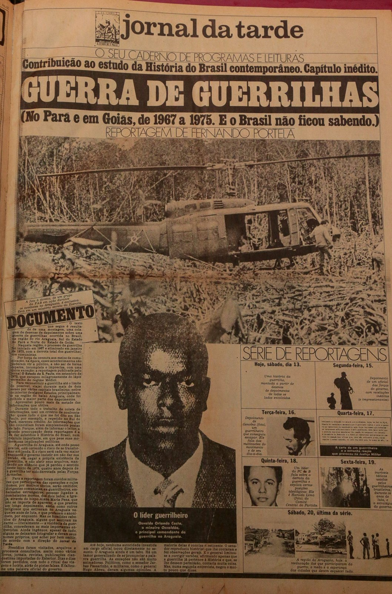
Pontos de atenção
O traidor ficcional carrega o mesmo codinome de um guerrilheiro real, Antônio de Pádua Costa, desaparecido político com família viva, enquanto o executor histórico de Osvaldão foi Arlindo Vieira, bate-pau também conhecido como Piauí. Esta é a decisão por usar o nome Arlindo e não o seu apelido.
A obra ficcionaliza pessoas históricas com familiares vivos, o que recomenda consultoria jurídica sobre direitos de personalidade e, quando oportuno, diálogo com famílias e entidades de memória. A Nota de abordagem já separa o registro documental do registro do imaginário popular. Apesar de que de acordo com o STF não é preciso autorização nem do biografado, nem dos herdeiros, mas se responde pelo excesso.
A data da morte de Osvaldão diverge entre os registros militares, fevereiro de 1974, e as narrativas orais, abril, divergência que a obra assume como decisão dramatúrgica declarada.
Em busca.
Até a formalização da inscrição e dos registros autorais, o projeto circula em regime restrito.